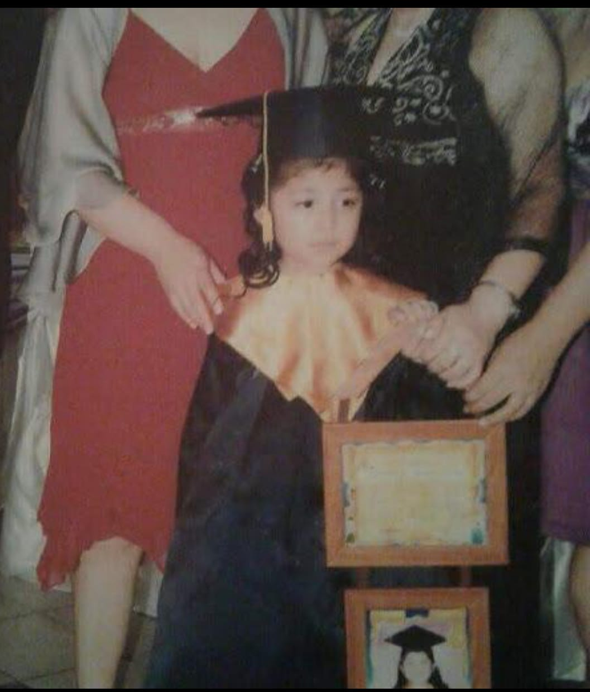
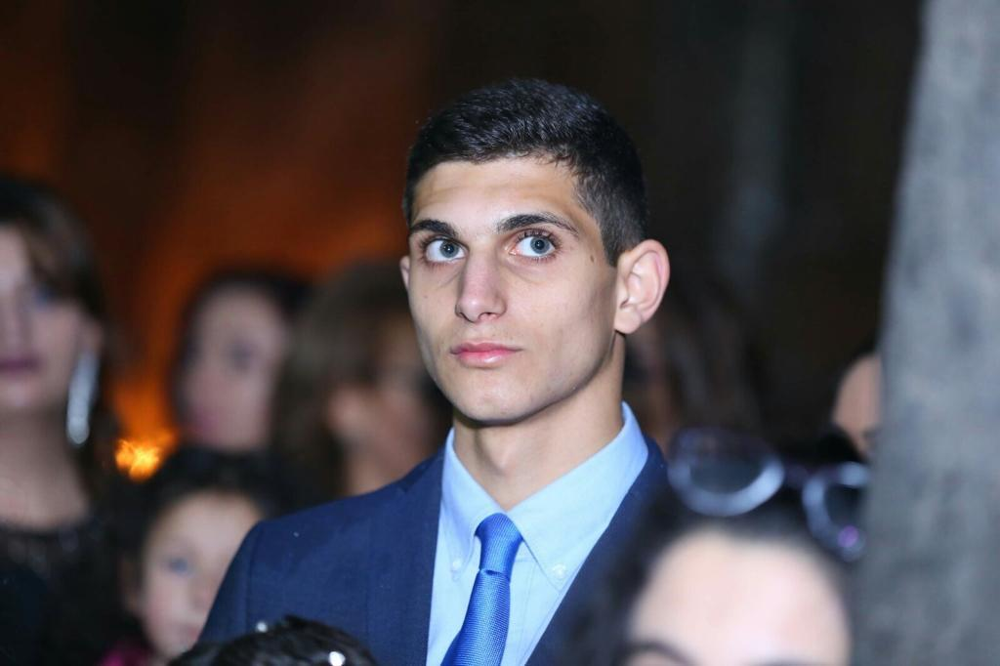

Bienvenidos a nuestra página web, en ella nos focalizamos en un tema que para nosotros es muy importante, la adopción de gatos.
En este punto te estarás preguntando a quién me refiero con nosotros. Esta asociación la componemos tres personas de momento,
Ismael El Hamiti, nuestro recepcionista que les atenderá con mucho gusto, es el que os atenderá en el mostrador según abráis
la puerta además es el que se encarga de cuadrar horarios y de ponerle las citas correspondientes para la hora de adoptar a
los gatos, consultas u otras dudas.
Nuestro siguiente miembro se llama Fernanda es una de nuestras veterinarias y experta en el cuidado de los gatos.
Fernanda se graduó en la universidad Complutense de Madrid terminando con la carrera de veterinaria tras graduarse con
notas espectaculares y terminar con éxito las prácticas se dispuso a trabajar en una veterinaria.
Por último, pero no por ello menos importante nuestro tercer integrante en este grupo,Karen. Karen tambien término graduado
en veterinaria sin embargo el lo realizo en la universidad Autónoma de Barcelona, tras terminar trabajo en Barcelona hasta que
se mudo a Madrid para trabajar en la veterinaria de su tío, en donde conoció a Fernanda y juntos decidieron montar esta asociación.

Nombre: Fernanda.
Apellidos: Apaza Saavedra.
Edad: 24 años.
Curriculum: Tras terminar los estudios universitarios
en la universidad Complutense de Madrid a los 22 años
con notas extraordinarias, la ofrecieron un trabajo
en una de las mejores veterinarias de MAdrid,el
Hospital Veterinario Retiro.

Nombre: Karen.
Apellidos: Sahakyan Israyelyan.
Edad: 26 años.
Curriculum: Tras terminar su carrera de veterinaria en
la universidad Autónoma de Barcelona y realizar las prácticas
de forma grata trabajo en una veterinaria de Barcelona durante
un año hasta que decidió mudarse a la capital, Madrid, y
trabaja en la veterinaria de su tío.